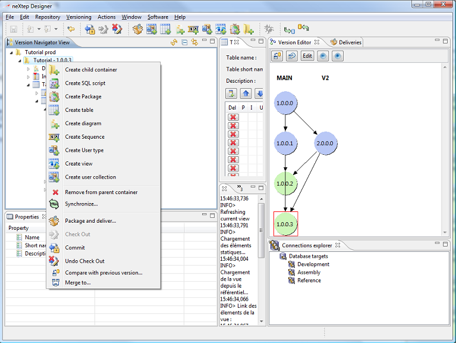

The neXtep designer environment is contextual. Therefore actions that you can make are determined by the currently selected object and this action will be relative to this selection.
For example, you can create a table in a container and you can create a unique key on a table. Therefore when you select a container, you will see the table creation action but not the unique key creation (which will only be shown when a table is selected). Depending on the installed vendor-specific plugins, you will be able to see more or less actions. This is a principle of the “contribution” architecture of neXtep Designer which is based on the Eclipse RCP modular platform.
Creation actions are available on the main toolbar of the environment and in contextual popup menus when you right click on an element.

The toolbar commands and the contextual popup menu commands will do exactly the same thing.
To edit an object you simply have to double click on it. The corresponding editor will come up in the editor's central section with appropriate edition capabilities. Note that you can open editor for a committed element but all edition controls will be disabled and you will not be able to change any information. If you check-out the element, its corresponding editor will automatically become enabled if it is opened in the workbench.
Note that when you edit objects, the currently edited object is your selection and therefore the toolbar buttons will be shown relatively of the edited element. For example if you are editing a table you will see the create unique & foreign key buttons on the toolbar. If you click on one of them the corresponding element will be created for the currently edited table.